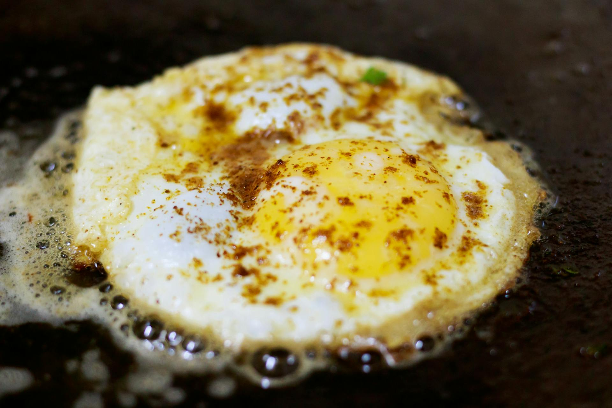

Home
Classic Omelette

Description
The classic omelette is a masterpiece of simplicity, transforming humble
eggs into a sophisticated, protein-packed meal in minutes.
Ingredients Requirements:-
- 2 or 3 large eggs
- 1 tablespoon unsalted butter
- A pinch of kosher salt
-
A pinch of freshly ground black pepper (white pepper is traditional for
a clean look)
- 1 tablespoon fresh chives, finely chopped (optional garnish)
-
2 tablespoons shredded cheese, such as Gruyère or Cheddar (optional
filling)
Steps
-
In a small bowl, crack the eggs and whisk them vigorously with a fork
until no streaks of white remain. Season with a pinch of salt and
pepper.
-
Place a non-stick skillet over medium-low heat and add the butter. Let
it melt until it starts to foam but doesn't brown.
-
Pour the egg mixture into the skillet. Using a heat-resistant spatula,
gently move the eggs around to create small curds.
-
Once the eggs are mostly set but still slightly runny on top, use the
spatula to smoothen them into an even layer.
- If using cheese, sprinkle it across the center of the eggs now.
-
Carefully fold one-third of the omelette over the center, then slide it
onto a plate, folding it again so it lands seam-side down.
- Garnish with fresh chives and serve immediately while hot.